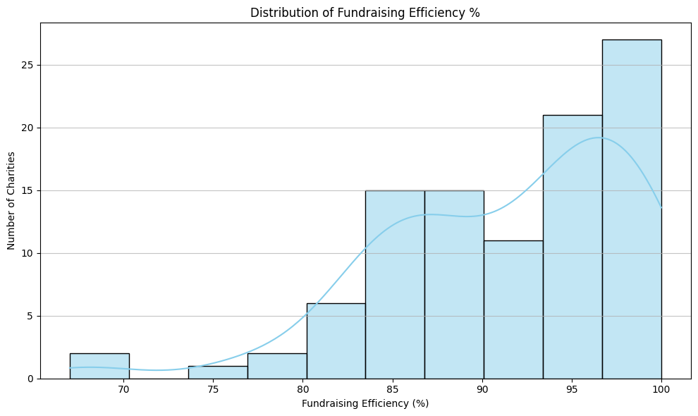
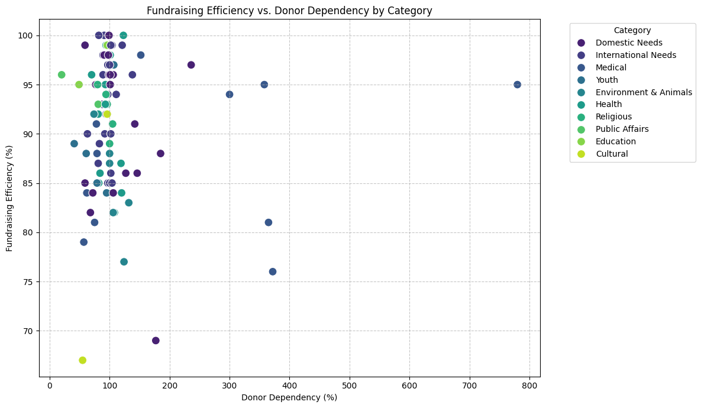

About the Project
This notebook uses pandas, matplotlib, and seaborn to clean and explore a real-world charity dataset from Kaggle. The guiding question is: what factors are associated with efficient fundraising?
Featured Code
The project required converting financial strings, such as dollar amounts in millions or billions, into numeric values before analysis and visualization.
def clean_and_convert_financial(series):
series = series.replace('Na', float('NaN'))
series = series.astype(str).str.replace('$', '', regex=False)
series = series.str.replace(',', '', regex=False).str.replace(' ', '', regex=False)
def convert_to_numeric(value):
if isinstance(value, str):
value = value.upper()
if 'B' in value:
return float(value.replace('B', '')) * 1_000_000_000
elif 'M' in value:
return float(value.replace('M', '')) * 1_000_000
elif '%' in value:
return float(value.replace('%', ''))
try:
return float(value)
except (ValueError, TypeError):
return float('NaN')
return series.apply(convert_to_numeric)Key Takeaways
Fundraising Efficiency Was Generally High
The distribution shows that most organizations clustered near the upper end of the fundraising efficiency range.

Donor Dependency Was Not a Clear Predictor
The scatterplot does not show a strong visual relationship between donor dependency and fundraising efficiency.
